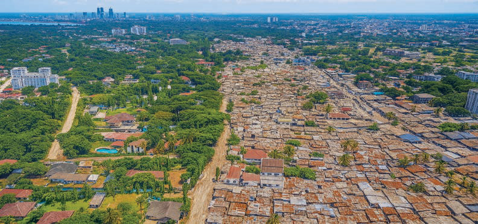
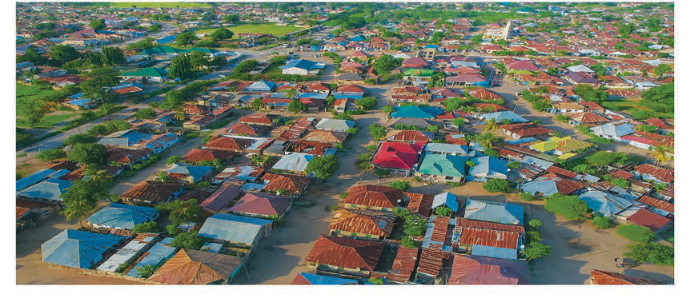

Mtawanyiko wa watu wengi
Hii ni hali ambapo watu wanakusanyika katika eneo moja kwa ajili ya makazi au kufanya shughuli mbalimbali za kijamii na kiuchumi. Mfano, katika maeneo ya miji mikubwa kama vile Dar es Salaam, Dodoma, Mwanza na Arusha au maeneo yenye rasilimali nyingi na fursa za kiuchumi. Kielelezo namba 1 kinaonesha mtawanyiko wa watu wengi.

Mtawanyiko wa watu kwa ulinganifu
Hii ni hali ambapo watu wamesambaa kwa usawa katika eneo kubwa. Idadi ya watu ni sawa katika maeneo tofauti, na hakuna eneo lenye watu wengi zaidi wala lenye watu wachache zaidi. Aina hii ya mtawanyiko mara nyingi hutokea katika maeneo ya kilimo, ambapo watu wamesambaa kulingana na rasilimali zinazopatikana, kama vile maji au ardhi nzuri kwa kilimo. Kielelezo namba 2 kinaonesha mtawanyiko wa watu kwa ulinganifu.
